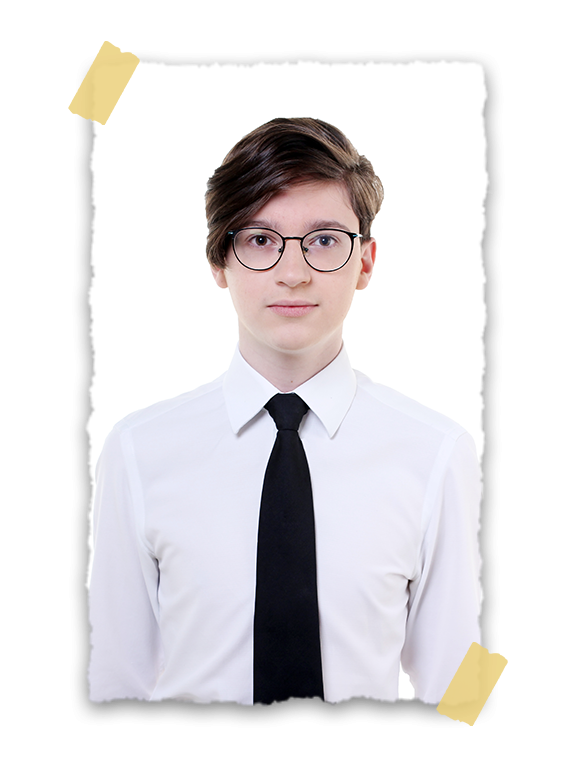

Mestre Conselheiro Regional da Segunda Região
Nome: Marco Aurélio Wolker
Idade: 15 anos
Cidade: Pato Branco - PR
Capítulo: Pato Branco n° 376
Iniciação: 16/09/2018
Elevação: 19/05/2019
Cargos ocupados
Mestre Conselheiro 2021.1
Corretor Caneta de Ouro 2022/2023
Prêmios
Caneta de Ouro 2020.1
Caneta de Ouro 2020.2
Past Mestre Conselheiro - Prêmio por Serviços Meritórios 2021.1